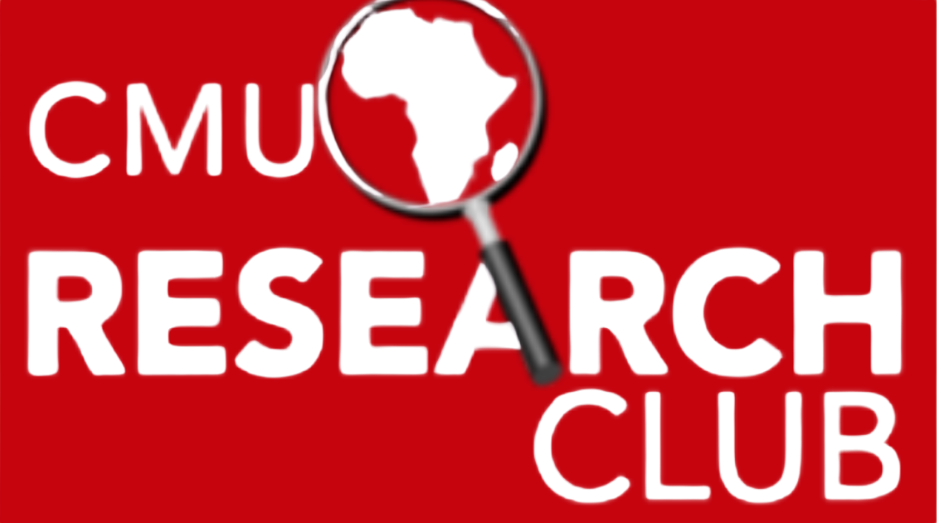

Fundamentals
AI Safety · Alignment · CMU Africa
AI capabilities are advancing faster than our ability to evaluate, align, or govern them.
ASICA brings together researchers, engineers, and policy thinkers to build the technical and governance tools that let us evaluate systems before deployment, not after.
What we're working toward
A self-sustaining research community that produces real technical outputs, not just awareness.
Success looks like reducing the catastrophic risk of AI before deployment, not just attendance numbers. We want members leaving with a concrete portfolio, a capstone project, a hackathon submission, maybe a co-authored paper, and a clear next step, whether that's a global fellowship or a research role of their own.
What we do
Research, education, and events
Research
Members contribute to real safety work, red-teaming, evaluations, and alignment research, individually through the Research Fellowship or on faculty-mentored projects.
Education
A structured Fundamentals track takes members from the core literature to their own capstone project.
Events
A recurring AI Safety Seminar and a semester hackathon bring the community together and connect members with practitioners in the field.
What members gain
What you'll walk away with
Technical literacy
Structured grounding in alignment, not just exposure.
Real research experience
A mentored pipeline from reading group to independent research to faculty-mentored projects.
Career pathways
Direct routes into MATS, SPAR, Apart Research sprints, BlueDot AGISF, and GovAI-style programs.
Programs
Find your track
Start with Fundamentals, then a research pipeline opens up as you go further.
Post-Fundamentals
Research Fellowship
Learn more →Invite-only
Research Scholars
Learn more →Ongoing
AI Safety Seminar
Learn more →Once a semester
Hackathon
Learn more →
Partners
Who we're working with
ASICA doesn't run alone, this pilot semester is hosted in partnership with an existing CMU Africa student organization.

CMU Africa Research Club
ASICA is piloting for Fall 2026 as a program under the CMU Africa Research Club, before pursuing independent registration.
researchclubcmuafrica.github.io ↗
Part of a global effort
Who we're working to connect with
Our goal is to build real relationships with the organizations already leading AI safety, alignment, and work from frontier labs to the fellowships our members are working toward.
Anthropic
OpenAI
Google DeepMind
BlueDot Impact
Apart Research
GovAI
Redwood Research
Eleos AI Research
MATS
SPAR
Right now
We're piloting for Fall 2026 as a program under the CMU Africa Research Club, before pursuing independent registration. That means lower overhead while we prove out the model, the programs, cohorts, and events run exactly as planned either way.
Stay in the loop
Join our mailing list
Get notified when applications open, a speaker is confirmed, or a cohort's capstones go live. No spam, unsubscribe anytime.